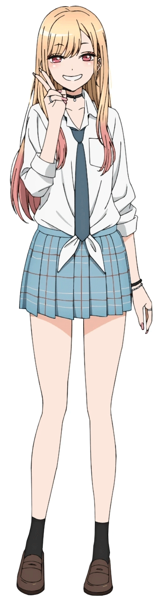
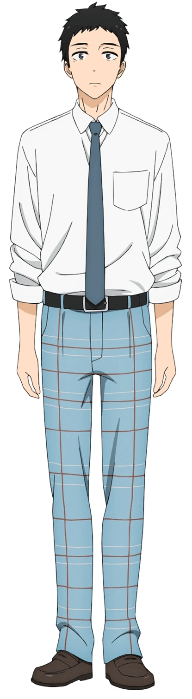
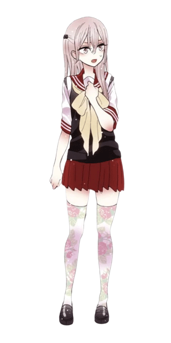
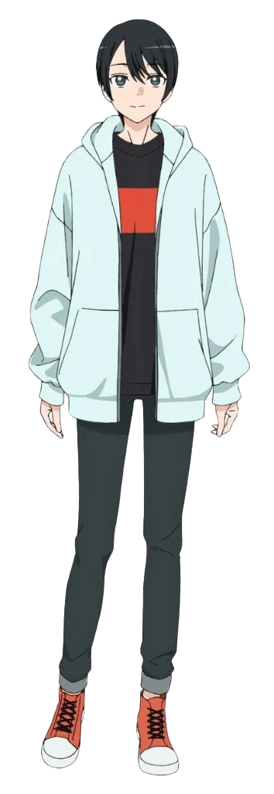
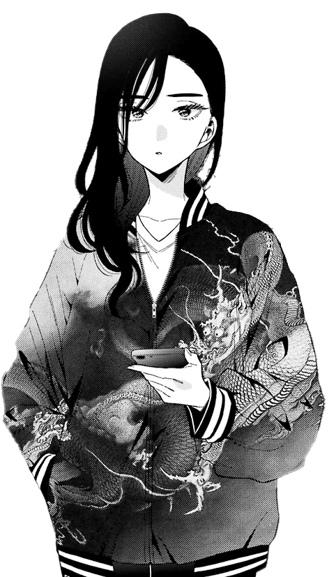

Marin Kitagawa
Marin is boisterous, extravagant and messy and quite clumsy. She is rather mature for her age. As a cosplayer and huge otaku, Marin is a big of fan of magical girl anime and adult video games. She strongly desires to cosplay as certain characters, seeing the notion of dressing up and becoming said characters as the ultimate form of love towards them. Marin's love for the characters she likes is so extreme that she won't cosplay as them if she feels as though she can't fit their appearance, not wanting to spoil their image.

Wakana Gojo
At the start of the series, Wakana was a withdrawn person in high school, having no friends and a secret love and admiration for hina dolls. This stems from his past where a girl angrily told him that boys shouldn’t like dolls and called him a freak, something that clearly affected him very deeply to the point where he closed himself off from everyone and lived his high school life as a recluse. Wakana notes Marin Kitagawa and how she has her own interests in anime and the like, but unlike him, is free to be completely open with them and has many friends. His solitary attitude makes him rather submissive with others, claiming that he doesn’t mind his classmates leaving him to do after class clean up, although Marin correctly pointed out that they were taking advantage of him.

Sajuna Inui
Sajuna is rather headstrong and blunt, despite her child-like appearance. She has no problem with chiding others or speaking harshly when it comes to it and can be quick to lose her temper as well. Perhaps as a given, she dislikes being seen or referred to as a child, as seen when she first met Wakana Gojo. She is shown to take cosplaying seriously and loves dressing up as characters she adores. Despite her popularity online, Sajuna isn't interested in fame and admits that she only cosplays for herself and by herself. Her passion for cosplaying stems from her own dream of wanting to become a "magical girl", a dream that she's had since she was very young, which stemmed from pure admiration when she first saw Shion Nikaido from the Flower Princess Blaze!! series.

Chitose Amane
Chitose is a kind, gentle and polite young man. Due to being short, skinny, and seen as unmanly, he grew up with a lack of confidence and even hated himself, but thanks to his sister, found joy in cosplaying as female characters. While he doesn't make his costumes himself, he is very knowledgeable about make up and applying different accessories, to the point where his skill in crossplay impressed Wakana Gojo and Marin Kitagawa.

Akira Ogata
Akira is introduced as a reserved, mature, and aloof individual. The way she talks with others is described as concise. This manner of speech stems from her inability to “be herself”, due to her parents' showing absolute disapproval to her interests in manga and/or anime, followed by being bullying from her peers.
